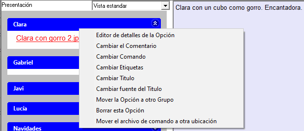
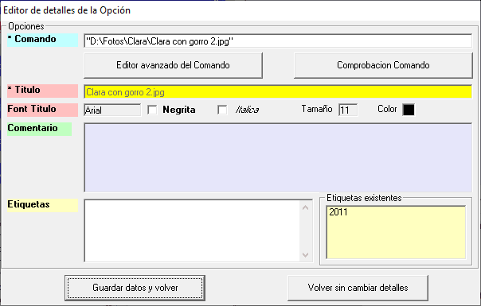
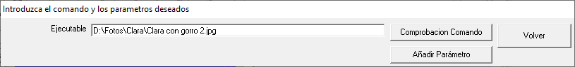
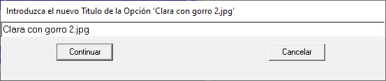
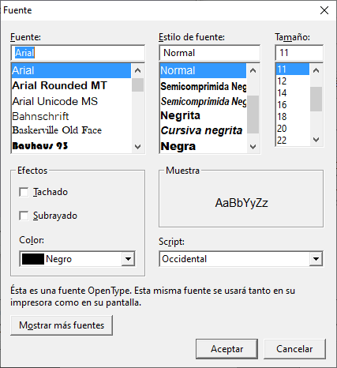
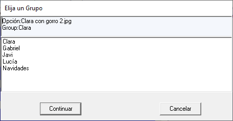
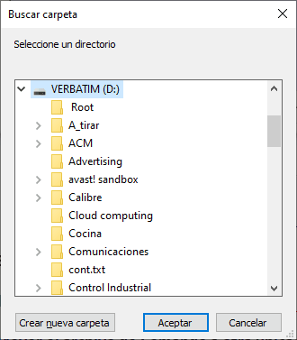

- Creación de Opciones.
- Edición de detalles de Opciones

- Acceso al editor de Detalles de la Opción

- Cambiar el Comentario: Ver "Edición del Comentario".
- Cambiar Comando
El Comando se refiere al fichero o la aplicación asociados a la Opción. Esta opción del menú presenta el siguiente formulario, en donde se puede cambiar el documento a abrir, o la aplicación deseada, incluyendo la especificación de los parámetros que necesite. Ver también "Asociar parámetros al Comando".

- Cambiar Etiquetas: Ver Edición de las Etiquetas de una Opción.
- Cambiar Título.

- Cambiar fuente del Título.
Esta opción del menú presenta el formulario para seleccionar el estilo del texto: su Fuente, Estilo, Tamaño, Efectos y Color del Título de la Opción.

- Mover la Opción a otro Grupo.
Esta opción del menú presenta el siguiente formulario, donde se puede elegir un Grupo, al que se moverá la Opción seleccionada.

- Borrar esta Opción.
Basta con usar la opción "Borrar esta Opción" para eliminarla.
- Mover el archivo de Comando a otra ubicación.
Esta opción permite cambiar la ubicación del documento asociado a la Opción. Presenta el formulario para poder elegir la nueva ubicación.

- Modificación de la referencia de una Opción.
- Eliminación de una Opción.
- Cambio del Grupo al que está asociada una Opción.